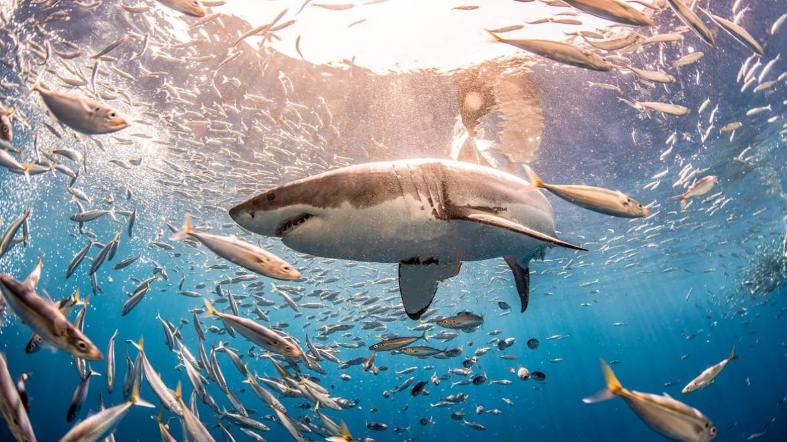

El gran tiburón blanco (Carcharodon carcharias) o jaquetón es una especie de pez cartilaginoso lamniforme de la familia Lamnidae (escualo). Vive en las aguas cálidas y templadas de casi todos los océanos. Esta especie es la única del género Carcharodon que sobrevive en la actualidad. A nivel mundial se considera Vulnerable (IUCN).

El gran tiburón blanco existe desde el Mioceno. Los fósiles más antiguos conocidos del tiburón blanco datan de hace unos dieciséis millones de años aproximadamente.5 Sin embargo la filogenia del gran tiburón blanco sigue siendo objeto de debate. La hipótesis original de los orígenes del tiburón blanco es que comparte un ancestro común con un tiburón prehistórico, como el megalodon. Las similitudes entre los restos físicos y el tamaño extremo de ambos llevó a muchos científicos a creer que estos tiburones estaban estrechamente relacionados, y el nombre de Carcharodon megalodon se aplicó a este último. Sin embargo, una nueva hipótesis propone que C. megalodon y el tiburón blanco son parientes lejanos. El gran tiburón blanco también está más estrechamente relacionado con una antigua especie de tiburón, el tiburón mako, que a C. megalodon, una teoría que parece estar apoyada por el descubrimiento de un conjunto completo de mandíbulas con doscientos veintidós dientes y las cuarenta y cinco vértebras de Carcharodon hubbelli en 1988 y publicado el 14 de noviembre de 2012. Además, nuevas hipótesis vinculan C. megalodon al género Carcharocles, que también incluye otros tiburones como Megalodon; Otodus obliquus es el antiguo representante del género extinto Carcharocles.